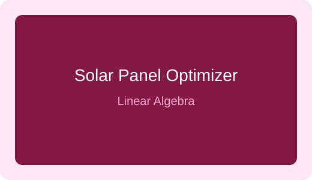

Arcade Basketball Game
A two-player arcade basketball game designed for the Basys-3 FPGA. The project includes IR sensors for detecting shots, a scoring system, a 60-second timer, and a 4-digit seven-segment display.
A two-player arcade basketball game designed for the Basys-3 FPGA. The project includes IR sensors for detecting shots, a scoring system, a 60-second timer, and a 4-digit seven-segment display.
An object-oriented game project developed using C++ and SFML. It includes a game loop, slingshot mechanics, background movement, entities, collision handling, and different game states.
A database project focused on managing clinic information such as patients, doctors, appointments, and related records using database concepts and NoSQL technologies.

A linear algebra project that simulates solar panel tracking. It uses vectors, dot products, angles, rotation matrices, and matrix multiplication to compare fixed, single-axis, and dual-axis tracking.